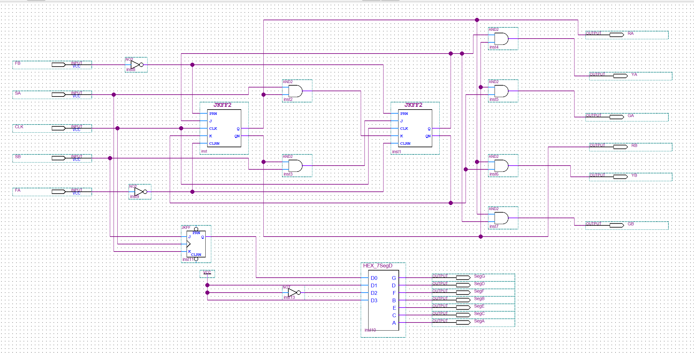
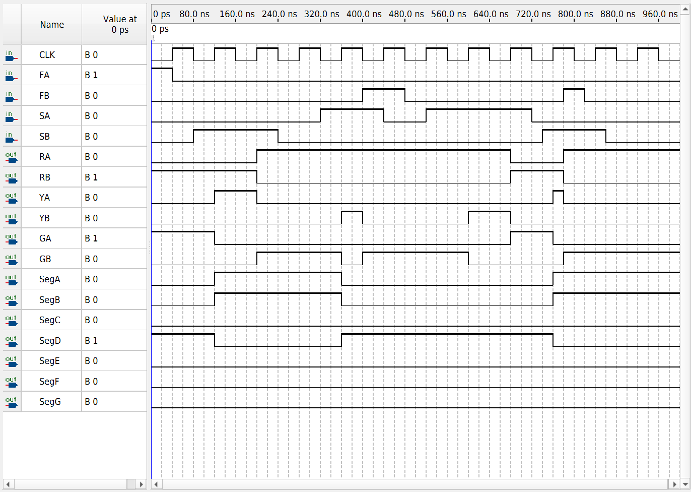

FPGA / SEQUENTIAL LOGIC
Two-Way Traffic Light Controller
A sequential traffic-light controller implemented using JK flip-flops, combinational logic, and a reusable seven-segment decoder in Intel/Altera Quartus Prime.
OVERVIEW
Sequential Traffic Control
This project implements a two-way traffic-light controller that manages red, yellow, and green signals for two intersecting directions.
The controller uses JK flip-flops to store state information and combinational logic to determine state transitions and decode the corresponding traffic-light outputs.
The recovered design was reconstructed in Quartus Prime Lite 25.1, recompiled, and functionally simulated again for portfolio verification.
DESIGN
State Storage & Output Logic
Two JK flip-flops provide the sequential state storage for the controller. Their outputs feed combinational logic that generates the red, yellow, and green signals for both traffic directions.
The controller also instantiates the reusable
HEX_7SegD decoder block, demonstrating modular
reuse between separate FPGA coursework projects.

SIGNALS
Inputs & Outputs
| Signal | Purpose |
|---|---|
| CLK | System clock |
| FA | Direction A force / control input |
| FB | Direction B force / control input |
| SA | Direction A sensor / request input |
| SB | Direction B sensor / request input |
| RA / YA / GA | Direction A red, yellow, and green outputs |
| RB / YB / GB | Direction B red, yellow, and green outputs |
| SegA–SegG | Seven-segment display outputs |
VERIFICATION
Functional Simulation
A new Quartus Simulation Waveform File was created to functionally verify the reconstructed controller.
Representative sensor and force input combinations were applied while the design operated from a repeating clock.
The resulting waveform demonstrates the major traffic-light states for both directions, including A-green/B-red, A-yellow/B-red, A-red/B-green, and A-red/B-yellow.
Both yellow transition outputs, YA and
YB, were observed during the simulation.

RESULTS
Verified Operation
TOOLS
Hardware & Software
RECONSTRUCTION
Recovering the Original Design
Only the original traffic-light schematic and archived screenshots were initially available.
A new Quartus project was created around the recovered
schematic, and the required HEX_7SegD
dependency was restored from the separately recovered
seven-segment decoder project.
The reconstructed project successfully completed full compilation with zero errors and was then functionally simulated using a newly created waveform testbench.
Timing verification is not claimed because the reconstructed project does not contain the original timing constraints.